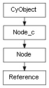

class cymel.core.cyobjects.reference.Reference¶

-
class
cymel.core.cyobjects.reference.Reference¶ ベースクラス:
cymel.core.cyobjects.node.Nodereference ノードタイプラッパークラス。
固定引数無しでのクラスインスタンス生成時のノード生成をサポート。
Methods:
associatedNS()associatedNamespaceの別名。associatedNamespace()関連付けられたネームスペースを得る。 byFilename(fname[, all])解決済みのファイル名からリファレンスノードを得る。 children()子リファレンスノードのリストを得る。 containsNode(node)指定ノードを含んでいるかどうか。 containsNodeExactly(node)指定ノードを直接含んでいるかどうか。 editAttrs([command, fail, success])編集コマンドのアトリビュート名リストを得る。 editNodes([command, fail, success])編集コマンドのノードリストを得る。 editPlugs([command, fail, success])編集コマンドのプラグリストを得る。 editStrings([command, fail, success, namespace])編集コマンドリストを得る。 fileName([unresolved, withoutPath, ...])filenameの別名。filename([unresolved, withoutPath, ...])ファイル名を得る。 importReference()リファレンスをインポートする。 isExportEditsFile()リファレンス編集ファイル (editMA や editMB) かどうか。 isLoaded()リファレンスがロードされているかどうか。 isLocked()ロックされているかどうか。 isReferenceLocked()リファレンスがロックされているかどうか。 isRoot()ルートリファレンスノードかどうか。 iterBreadthFirst()リファレンス階層を幅優先反復する。 iterDepthFirst()リファレンス階層を深さ優先反復する。 load()ロードする。 lockReference([val])リファレンスをロック、又はアンロックする。 nodes()含まれているノードのリストを得る。 parent()親リファレンスノードを得る。 referenceNode()parentの別名。removeReference()リファレンスを削除する。 root()ルートリファレンスノードを得る。 unload()アンロードする。 unlockReference()リファレンスをアンロックする。 Methods Details:
-
associatedNS()¶ associatedNamespaceの別名。
-
classmethod
byFilename(fname, all=False)¶ 解決済みのファイル名からリファレンスノードを得る。
パラメータ: 戻り値の型: Referemceor None
-
editAttrs(command=None, fail=False, success=True)¶ 編集コマンドのアトリビュート名リストを得る。
パラメータ: 戻り値の型:
-
editNodes(command=None, fail=False, success=True)¶ 編集コマンドのノードリストを得る。
可能な限り cymel のノードオブジェクトが返されるが、 見つからない場合は文字列のまま返される。
パラメータ: 戻り値の型:
-
editPlugs(command=None, fail=False, success=True)¶ 編集コマンドのプラグリストを得る。
可能な限り cymel のプラグオブジェクトが返されるが、 見つからない場合は文字列のまま返される。
パラメータ: 戻り値の型:
-
editStrings(command=None, fail=False, success=True, namespace=True)¶ 編集コマンドリストを得る。
パラメータ: 戻り値の型:
-
filename(unresolved=False, withoutPath=False, withoutCopyNumber=False)¶ ファイル名を得る。
パラメータ: 戻り値の型:
-
importReference()¶ リファレンスをインポートする。
-
load()¶ ロードする。
-
removeReference()¶ リファレンスを削除する。
-
unload()¶ アンロードする。
-
unlockReference()¶ リファレンスをアンロックする。
-